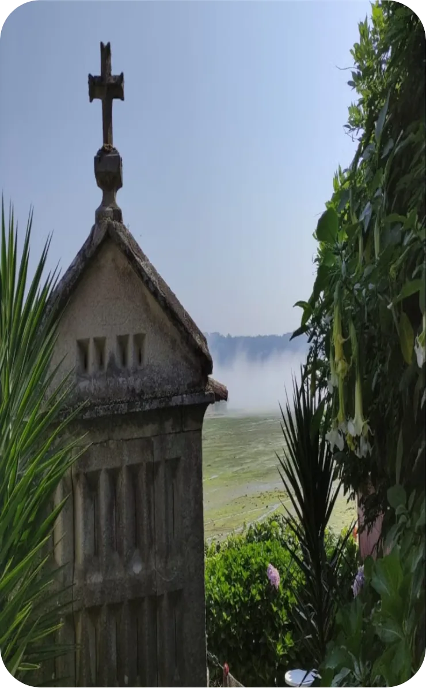

Descripción
Patrimonio, mar y leyenda
Esta ficha está preparada para presentar la experiencia con una descripción breve, clara y comercial. La estructura respeta el límite de máximo tres párrafos indicado para las páginas de servicio y deja el contenido listo para sustituirse por el texto definitivo del negocio.
La visita puede enfocar Combarro desde su valor patrimonial y marinero, incorporando tradición oral, relatos populares y ese tono de misterio que identifica a Zona Meiga Tours.
En una fase posterior, este bloque podrá alimentarse desde backend junto con horarios, disponibilidad, precios, idiomas, condiciones de cancelación y punto de encuentro.
Itinerario
Qué encontrarás en esta experiencia
-
01
Punto de encuentro y bienvenida
Inicio de la visita, presentación del recorrido y primeras claves para entender el contexto histórico y cultural de Combarro.
-
02
Recorrido por el núcleo histórico
Paseo por espacios representativos, con atención al patrimonio, la arquitectura popular y la relación de la villa con el mar.
-
03
Historias de meigas y tradición oral
Bloque narrativo dedicado a leyendas, creencias y relatos populares vinculados al imaginario gallego.
-
04
Cierre de la experiencia
Espacio final para resolver dudas, recomendar próximos planes y orientar hacia otros servicios relacionados.
Detalles
Información útil
- Duración Pendiente de definir.
- Idioma Castellano. Gallego bajo disponibilidad.
- ¿Qué incluye? Visita guiada y acompañamiento durante el recorrido.
- Accesibilidad Consultar condiciones según fecha y recorrido.
- Mascotas Consultar antes de reservar.
- Cancelación Condiciones pendientes de definir.
- Punto de encuentro Se facilitará tras confirmar disponibilidad o reserva.